The Young Artist
"Work hard in silence, let your success be your noise."
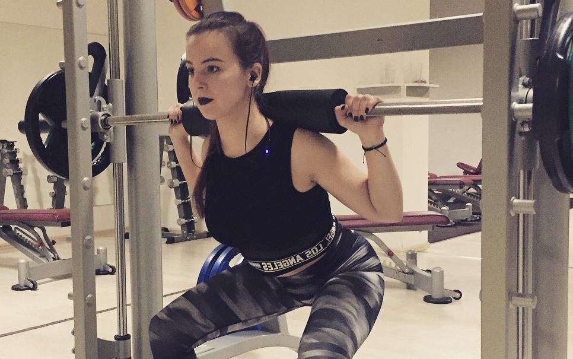Crazy 20 years old girl, who totally loves when she can spend free time with friends somewhere outside or just at home, hours and hours creating another of her artworks. Yeah, this is me, Miša. Always listening to good music in my headphones, mostly songs written by metal bands. Black colour is my happy colour, so when I open my wardrobe everything inside is under the domination of black, darker black and the more dark one. Time to time I am creating my own world, using my imagination with the pencil on paper or bringing some colours into my day with brush on the canvases. I can say, that this is my biggest passion. It hasn't changed for 6 years and always makes me relaxed and cheerful. I love to spend some time in a fitness as well. It helps me to get rid of the stress even if it hurts like hell.
Maybe someone asks, what is the reason I have chosen the wolf's paw as my logo. Weeks ago we should create one for ourselves. That moment I knew, what I want. It is just an amazing animal. It fascinates me. The loyalty. The strength. One day I was listening to one metal band and I have found my favourite lines in their song. Those lines say "You can throw me to the wolves, tomorrow I will come back, leader of the whole pack".
Gallery of Artworks
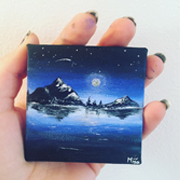 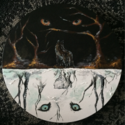 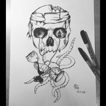 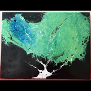 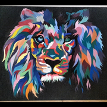 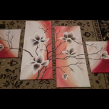 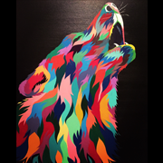 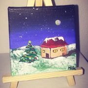 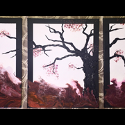 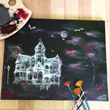 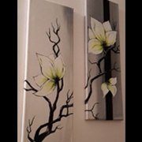 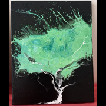 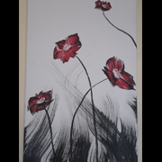